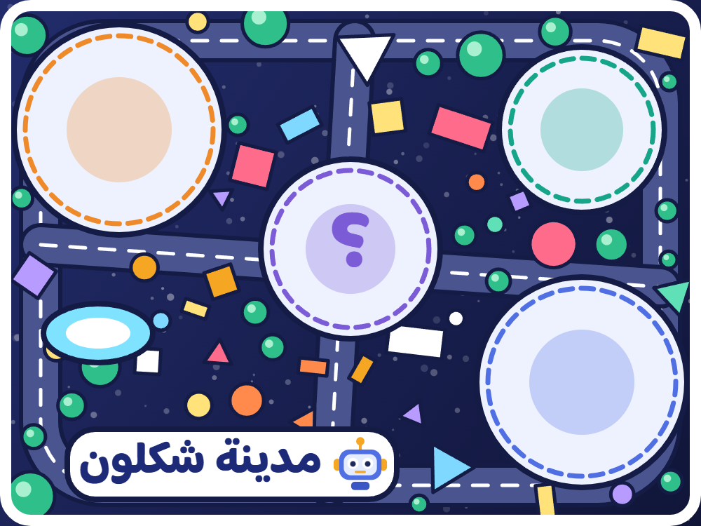

السجادة اختيارية. التطبيق يعمل بدونها: تظهر المدينة أمام الكاميرا، وزر «انقل المدينة» يضعها حيث يلمس التلميذ. إن وُضعت السجادة أمام الكاميرا التصقت بها المدينة وصار التثبيت أدق، ويستطيع التلاميذ أن يدوروا حولها.
نسخة لكل مجموعة. اطبع بالألوان، بالحجم الحقيقي (100%)، ويفضّل ورق غير لامع. لحجم أكبر على الأرض اطبع الصورة عالية الدقة A3 أو أكبر. لا تقصّ الصورة ولا تغطِّ جزءًا منها.

مدينة شكلون
1امسحوا الرمز
2اضغطوا «ابدأ»
3وجّهوا الكاميرا إلى السجادة
إن وزّع المعلم المجموعات فامسحوا رمز الصف من شاشته بدل هذا الرمز.